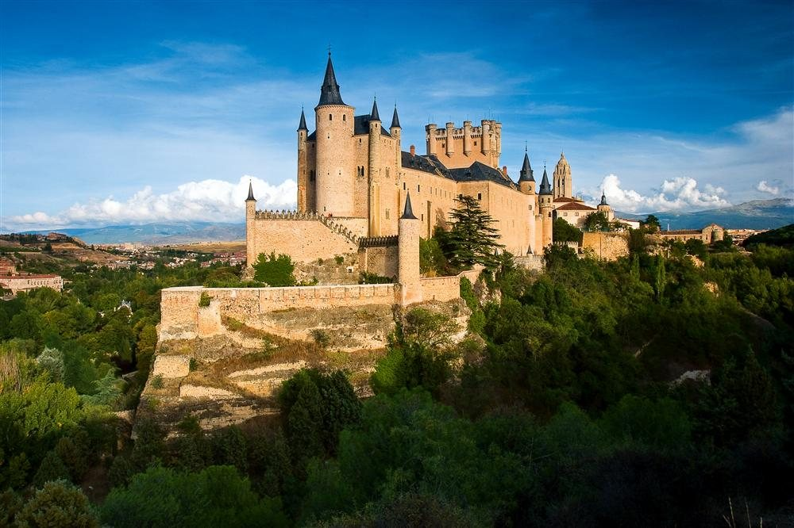

SEGOVIA
LOCALIZACIÓN

Fuente: Wikipedia: Segovia
LOCALIDADES PRINCIPALES
- Segovia
- Cuéllar
- El Espinar
- Palazuelos de Eresma
- Real Sitio de San Ildefonso
- La Lastrilla
- Cantalejo
- San Cristóbal de Segovia
- Nava de la Asunción
- Carbonero el Mayor
GEOGRAFÍA
La provincia, que tiene una superficie de 6920,65 km²,2 limita al norte con las provincias de Valladolid y Burgos, al este con Soria y Guadalajara, al sur con la Comunidad de Madrid, y al oeste con Ávila.
HISTORIA
Segovia es una urbe de amable paseo que integra en su trazado vestigios monumentales procedentes de épocas diversas. Declarada en 1985 Patrimonio de la Humanidad, su casco histórico se alza sobre una atalaya rocosa que flanquean los ríos Eresma y Clamores, una ubicación imponente que ya fue apreciado por los romanos.
El paseo por sus tesoros comienza en la plaza del Azoguejo, un lugar dedicado a mercado desde antiguo, que se abre a los pies del famoso Acueducto de Segovia –imprescindible verlo iluminado–. Esta grandiosa obra de ingeniería romana data del siglo I, conserva 166 arcos y en la ciudad se extiende a lo largo de 728 metros, alcanzando su altura máxima (28 m) en esta plaza.
Dejando atrás el emblema heráldico de Segovia, el visitante entra en el núcleo antiguo, impregnado de aire medieval gracias al repertorio de mansiones nobiliarias, palacios y templos románicos. Al poco se pasa junto a la Casa de los Picos, así llamada por las piedras que cubren su fachada, y al fondo se distingue la plaza de Medina del Campo. En ella sobresale la iglesia de San Martín (siglo XII), escoltada por una escalinata y el señorial torreón de Lozoya. La plaza, también llamada de las Sirenas por confundir con ninfas marinas las dos esfinges situadas al pie de la escalinata, es un rincón de tanto encanto que los propios segovianos y los visitantes la utilizan como lugar de encuentro.
Solo con cruzar la calle se entra en el Museo de Arte Contemporáneo Esteban Vicente donde, entre otras colecciones, se exhibe la obra de este pintor segoviano (1903-2011), que fue uno de los primeros miembros del expresionismo abstracto.
Sin embargo, la protagonista indiscutible de la plaza es la Catedral segoviana, apodada por sus líneas armoniosas «la Dama de las Catedrales». La fachada y la robusta torre de 90 metros de alto dan paso a un interior sembrado de joyas artísticas: el claustro de origen románico, el altar neoclásico firmado por el arquitecto italiano Sabatini (1722-1797) y el Cristo Yacente de Gregorio Fernández, destacado exponente de la escuela castellana de escultura barroca. Asimismo sobresalen los tapices flamencos del siglo XVII que se exhiben en el museo catedralicio, donde también se muestra el Sinodal de Aquilafuente (1472), uno de los primeros libros impresos en España.
En todas las calles y plazas por las que discurre la visita a Segovia es casi inevitable recalar en alguno de los mesones tradicionales y pedir su plato estrella: el cochinillo asado.
El silencio acompaña el paseo por los callejuelas que conducen a la plaza de San Esteban, dominada por una iglesia (siglo XIII), cuya torre comparte con la Catedral lo más alto de la silueta segoviana. Siguiendo por el callejón Capuchinos aparece en pocos minutos el barrio de Los Caballeros, poblado de palacios de alcurnia y la iglesia de San Juan de los Caballeros, sede del Museo de Zuloaga.
Fuente: National Geographic
CULTURA
El patrimonio histórico de la provincia es muy rico y variado. En la capital se encuentran joyas romanas como el acueducto de Segovia, único en la provincia pues de la misma época sólo se conocen los mosaicos de algunas villas excavadas en Aguilafuente o Paradinas.
Del gótico medieval, aunque alterados e incluso en ruinas, quedan numerosas construcciones; en su momento inicial dejó sus huellas en los monasterios de Sacramenia y San Pedro de las Dueñas, pero el gótico tardío, más pujante, levantó una espléndida catedral, los conventos de Santa María la Real de Nieva y San Francisco de Cuéllar y Santa Cruz, El Parral y San Francisco de Segovia, así como notables templos parroquiales, a veces incompletos, en El Espinar, Villacastín, La Losa, Martín Muñoz de las Posadas, Coca, Carbonero el Mayor o Cantimpalos. También destaca la pintoresca Ermita del Santo Cristo de la Moralejilla en Rapariegos del S. VI, declarada Monumento Histórico Artístico en 1994, y en la misma localidad el Convento Inmaculada Concepción de Rapariegos y la Iglesia de arquitectura Múdejar tardío.
NATURALEZA
La provincia está surcada por diferentes cursos de agua que nacen en las alturas de la sierra de Guadarrama y que, con la excepción de algunos pocos arroyos que discurren en dirección suroeste pertenecientes a la cuenca hidrográfica del Tajo, discurren en dirección sureste-noreste por el llano de la Meseta Norte, todos ellos pertenecientes a la cuenca hidrográfica de Duero. Entre ellos se encuentran el río Eresma, que pasa por la capital provincial, y el Duratón con sus conocidas «hoces», además del Cega, el Riaza y el Voltoya.
Al río Riaza desaguan el Aguisejo (también llamado Grado o Ayllón), el Riaguas y los demás arroyos que bañan el partido de su nombre, saliendo de la provincia por el término de Montejo de la Vega de Serrezuela y entrando en el Duero cerca de Roa. Entre los afluentes del Duratón están el Serrano, Castilla, Prádena y los demás arroyos del partido de Sepúlveda; sale por el término de Laguna de Contreras, y entra en el Duero cerca de Peñafiel. El Cega recibe las aguas del Cerquilla y multitud de arroyos de Cuéllar y Segovia; sale por el término de la Mata de Cuéllar y entra en el Duero, cerca de Puente Duero. El Pirón tiene como tributario al arroyo de Polendos, el Maluca y otros en los mismos partidos de Segovia y Cuéllar, reuniéndose con el Cega al salir este de la provincia. A la cuenca del Eresma pertenecen el Riofrío, Milanillos, Moros y el Voltoya con todos los arroyos del partido de Santa María la Real de Nieva y otros muchos del partido de Segovia; sale de la provincia, siendo línea divisoria entre el partido de Santa María y el de Cuéllar. Este río entra en la provincia de Valladolid y desemboca en el Adaja.
El clima es mediterráneo continentalizado, con inviernos prolongados, secos y fríos, y veranos calurosos pero cortos.

Fuente: Universidad de Nebrija
TRADICIONES
- San Antón
- El día 17 de enero siguiendo una larga tradición, los segovianos se concentran en la parroquia de Santa Eulalia para participar en la bendición de animales organizada por la cofradía de San Antonio Abad. Esta cofradía agrupa también a los profesionales del Gremio de Carniceros, que celebran su patrón en esta fecha.
- Fiesta de Santa Águeda
- Aunque todos los barrios de la ciudad celebran esta fiesta, sin duda la más sobresaliente es la que tiene lugar en Zamarramala. La fiesta de Santa Águeda de Zamarramala, ha sido declarada de Interés Turístico Nacional, y supone una muestra de una tradición con un notable atractivo etnográfico.